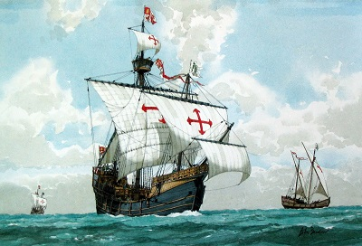

Cristoforo Columbo, talijanski pomorac u službi španjolskog dvora, spremao se otkriti zapadni pomorski put u Indiju. U to vrijeme veæ je prevladavalo mišljenje da je Zemlja okrugla (prvi zemljovid svijeta - Paolo Toscaneli) te da se ploveæi na Zapad može stiæi na Istok tj. u Indiju, zemlju bajoslovnog bogatstva u zlatu, biserima, bjelokosti i mirodijama.
Kolumbo je opremio tri broda – karavele. Najveæi od njih bio je njegov admiralski brod Santa Maria koji je imao nosivost od 100 tona. Druga dva broda Nina i Pinta bili su upola lakši. Te su karavele izraðene po uzorima na tadašnje portugalske brodove.
Putovanje je trajalo èitava dva mjeseca, ali nije bilo teško. Jedinu poteškoæu stvarala je Kolumbu malodušnost posade od približno dvadeset ljudi od kojih su se mnogi bojali da nikada više neæe vidjeti svoju sunèanu Španjolsku. Posada se ohrabrila tek vidjevši ptice kako lete prema zapadu. Kolumbo je naredio da prate njihov let. Rano ujutro 12. listopada 1492. g. momak koji je s košnjaèe na glavnom jarbolu promatrao puèinu uzbuðeno je stajao vikati: “Kopnoooo!“ Svi izvan sebe od uzbuðenja potrèali su na pramac i zaista - ugledali su kopno. Bio je to jedan od Bahamskih otoka uz koji su i pristali. Kolumbo mu je dao ime San Salvador ili Sveti Spasitelj. I tako je otkrivena Amerika.